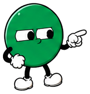

Paperhint
PITCH Teaching is the job. Paperwork isn't.
Every teacher deserves
a second pair of hands
The founding-school pitch — how one platform hands the week back to your teachers and your office.
Paperhint · 2026 · for schools we're building with

The week today

Count the hours your school already spends
Correctionevenings and Sundays, after every exam — the same red pen, class after class
Question papersevenings to set, every term, every subject, every set
Registersattendance and marks copied by hand into books nobody opens twice
Parentsa WhatsApp group somebody maintains after hours
Every one of these is already paid for — in teacher-hours.
The scattered spend

You already pay for all of it — in pieces
Correction daysextra staff-hours bought back, every exam
An ERPthat nobody feeds after August
Message packsfor circulars, reminders and results
Materialsliving in personal folders and pen drives
A registerfor every record, copied by hand
Five spends. None of them talking to each other.
Why AI — as a layer, not a product
One intelligence under every module
In teaching
Teaching notes
Question papers
Homework
Evaluation
In administration
Attendance
Allotment
Portal
The AI layer — one intelligence, never a feature
drafts for the syllabus · marks on the rubric · reads the registers · plans the allotments · tells the parents


you approve ↻
The paper you already produce answer sheets · registers · written exams
Your context syllabus · subject books · library · rubric
You'll rarely see the word "AI" in the product. You'll see finished paperwork.
At the teacher's desk
The teaching job, brought together
Teaching notes & copilotnotes you can actually teach with — drafted, simplified, extended
Homework & assignmentsassigned in a minute, home the same minute
Shared libraryone teacher's notes, every teacher's shelf — scoped to the school's email
Papers & evaluationset the paper, photograph the sheets, get back marked answers on your rubric
✎ Paper set Ch 4–5 · blueprint + answer key✓
✓ Q1 Laws of reflection5/5
✗ Q3 Numerical — step missed3/5
∑ Scored on rubric recorded to each student18/20